| Author | Anshul Ghogre |
| Submitted | 20 September 2026 |
| Repository | github.com/anshulghogre4/cloudservRAG (code version ca6bed2 and later) |
| Evaluation runs reported | Development set, 500 tickets, 16 September 2026 (three runs, the last is reported). Validation set, 80 tickets, 16 September 2026: one evaluation run with the live provider, whose figures are reported; re-run on 20 September 2026 for the video demonstration only, with cached model replies and no change to the system (identical output). |
| Pages | Sections 1 to 10 within the 20 to 30 page limit; appendices follow. |
| 1 | Executive summary |
| 2 | The problem |
| 3 | Discovery findings |
| 4 | Requirements |
| 5 | Architecture and design |
| 6 | Implementation |
| 7 | Evaluation |
| 8 | Governance and risk |
| 9 | The requirements revision |
| 10 | Conclusions |
| Declaration of AI tool use | |
| A | Appendix A: acceptance criteria evidence map |
| B | Appendix B: prompt register |
| C | Appendix C: full result tables |
| D | Appendix D: a decision-log record |
| E | Appendix E: repository listing |
| F | Appendix F: filled workbooks |
Figures and tables are numbered in order of first reference. Every performance figure names the data it was measured on and the run it came from; the runs are recorded under evaluation/results/ in the repository.
CloudServe Solutions, a cloud tooling company with about 150 staff and just over 200 corporate customers, asked for a chatbot. Their support function receives more than 500 tickets a week across four channels, answers in eight to twelve hours against a two-hour service agreement, resolves 42 per cent of tickets on first contact, and scores 3.2 out of 5 on satisfaction. Discovery with five stakeholders and 500 labelled tickets showed a different problem from the one the request implied: the company is not short of answers, it is short of a way to reach them. Seven in ten tickets already have their answer in the 29 support articles, yet 138 of those 357 tickets were still passed to tier two, because agents cannot find the right article and fall back on memory and private notes. Escalations arrive with no context, so the second engineer re-reads the thread and re-asks the customer. Tickets that were passed on score 2.63 against 3.41 for those closed first time, and 38 per cent of them come back within a week.
What was built is a ticket pipeline rather than a chatbot: it ingests tickets from all four channels into one record, classifies intent and urgency with a calibrated confidence, retrieves passages from the 29 articles, decides deterministically whether to answer or escalate, drafts an answer in which every factual sentence is verified against a retrieved passage and cited, validates it with guardrails that can block, logs every decision to an append-only store, and produces a metrics report from one unattended command. Escalations carry a summary, the retrieved articles, the draft and a statement of what the system was unsure about. Compliance, security, feature and unclear requests never receive an automatic answer.
On the 80-ticket validation set, in its single evaluation run on 16 September 2026, the system answered 60 tickets automatically, escalated 16 and blocked 4 drafts: a first-contact resolution of 75.0 per cent (95 per cent interval 64.5 to 83.2) against a baseline of 42 per cent and a target of 60, and an escalation rate of 25.0 per cent against a target of 30 or lower. Intent precision was 99.1 per cent macro-averaged, every citation resolved to a retrieved passage, no private data appeared in any draft, no never-auto ticket was answered, calibration held within 5 points, and the decision log reconciled exactly (324 rows for 80 tickets). The development set of 500 tickets gave the same picture (77.4 per cent resolution, 22.6 per cent escalation). The system also ran to completion with the model provider disconnected, escalating every ticket with a logged reason.
The single most important caveat is that first-contact resolution here means "answered automatically and not blocked", measured offline against labels. A perfect router would score at most 62 per cent on those labels; the system scores higher because 95 of its 114 routing disagreements are automatic answers on tickets whose text is identical to tickets labelled answerable but which the labellers marked for escalation. Whether those answers would have satisfied the customer cannot be known without a pilot, and the two targets the project could not measure, time to first reply and customer satisfaction, remain proxies. The 3-second latency target is also not met with a remote free-tier model: the local pipeline takes half a second, the provider round trips take 6 to 17 seconds.
The head of support, Marcus Adeyemi, commissioned a chatbot. In his own words he pictured it "answering the easy ones so my people can do the hard ones", and he had "no strong view about how it works". The number he must report is time to first reply, because it is the figure in the service agreement; the number he actually cares about is first-contact resolution, because every ticket that bounces to tier two "costs us roughly four times what a resolved one costs, and it makes the customer angrier than waiting would have". His first failure condition was unambiguous: "I would rather it said nothing than said something wrong." His second was a tool that makes more work than it saves, which is what a canned-response library had already done. He also has a compliance review in the autumn and needs to be able to say why the system did what it did.
Section 3 sets out the evidence in full. The short version is that the five interviews each described one facet of a single problem, and the ticket data settled the points on which they disagreed. The tier one agent said seven in ten tickets could be answered without looking anything up but that the time goes into finding and writing the answer, because searching the documentation "is painful, so most of us do not". The tier two engineer said about half of what reaches him could have been resolved at tier one, and that escalations arrive as the raw ticket with no summary and no note of what was tried. The technical writer said the 29 articles are accurate and reviewed on rotation, but that the support team does not use them internally, because search is keyword-on-title and customers phrase problems differently. The customer said the waiting is the problem rather than the people, that he finds the answer himself about half the time, and that he would accept automation only if it is honest about what it thinks, cites the page, and is labelled as automated.
The data confirmed the agents rather than the request. 71.4 per cent of the 500 development tickets are answerable from the existing articles, but only 61.3 per cent of those were resolved on first contact; 138 answerable tickets, 27.6 per cent of the whole sample, were escalated anyway. Of the 281 escalations, 49.1 per cent were answerable and 32.7 per cent were labelled as tickets that should have been answered automatically. Repeat contact is entirely a property of escalation: 0 per cent of resolved tickets return, 38.4 per cent of escalated ones do. Enterprise customers, who hold the stricter agreement, are the slowest tier to be resolved (median 369 minutes against 141 for business), which the customer did not know and the head of support feared.
A chatbot is a delivery mechanism. It says nothing about where an answer comes from, whether it is correct, what happens when the answer is not known, or who is accountable when it is wrong. The evidence says that the value lies in three places a chatbot does not reach: finding the documented answer for the 71 per cent of tickets that have one, saying nothing rather than something wrong for the rest, and making the escalations that remain arrive with the context the next person needs. Seventeen per cent of tickets, the compliance, security, feature and unclear requests, must never be automated at all, and they consume 29 per cent of agent minutes; those are the "hard ones" the agents should be freed for. The problem statement below was written from the discovery workbook and tested against each transcript.
Problem statement (Stage 1 workbook, section 6; the author's own words)
CloudServe asked for a chatbot to answer the easy tickets so the team can handle the hard ones. The evidence says the team is not short of answers; it is short of a way to reach them. Seven in ten tickets already have their answer written in the twenty-nine support articles, yet more than a third of those tickets are still handed to tier two, because agents cannot find the right article quickly and fall back on memory and private notes. Nearly half of what reaches tier two could have been closed at tier one, and it arrives with no summary, so the engineer re-reads the thread and asks the customer questions they have already answered. That double handling, not just the wait, is what customers mark down: tickets passed on score 2.6 out of 5 against 3.4 for those closed first time, and almost four in ten of them come back a second time. Enterprise customers, who hold the stricter agreement, are currently served slowest. The problem is that known answers are not reaching agents or customers at the first touch, and that every hand-over loses the context the next person needs. Any fix must say nothing rather than say something wrong, must always pass security, compliance, feature and unclear requests to a person, and must be able to explain every decision it makes.
Discovery used the five interview transcripts and the 500 development tickets. Every count below was produced by analysis/discovery_counts.py against development_tickets.json; the full tables are in the Stage 1 workbook (Appendix F). The validation set was not opened during discovery or the build. Findings are presented here rather than the tables, in the order in which they changed the design.
The single most consequential row in the workbook is the share of tickets answerable from the 29 articles: 357 of 500, 71.4 per cent, and every article is the expected source for at least one ticket. Figure 1 sets the answerable share of each intent against the share that agents actually resolved on first contact. For every intent that can be answered, the two figures are separated by 15 to 45 points; performance degradation, database issues and data residency are around 70 per cent answerable and around 30 per cent resolved. Answerable tickets resolve in a median of 48 minutes; non-answerable ones in 750. The content exists, so the fix is retrieval with a citation, not new documentation, and the retrieval must never draw on the agents' private files, which the tier two engineer described as "correct two years ago and not right since".
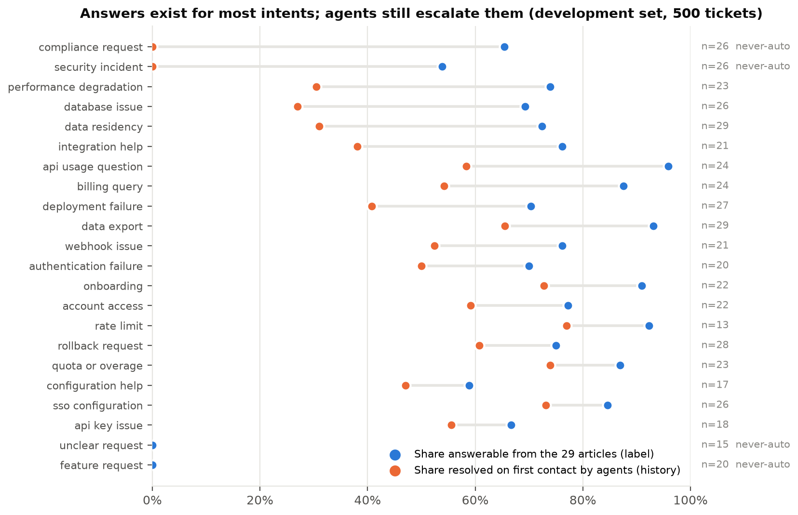
The head of support reports a response-time number and the customer complained about waiting, but the data ties satisfaction to what happens at the hand-over. Figure 2 compares the 219 tickets resolved first time with the 281 that were escalated: satisfaction 3.41 against 2.63, repeat contact 0 per cent against 38.4 per cent, median resolution 32 minutes against 745. The tier two engineer's account explains the mechanism: escalations arrive as the raw ticket, he re-reads and re-asks, and "that is where the frustration really comes from, more than the waiting". This finding made the escalation package a first-class output of the system rather than a fallback, with the summary, the retrieved sources, the draft and a statement of uncertainty attached to every escalation.
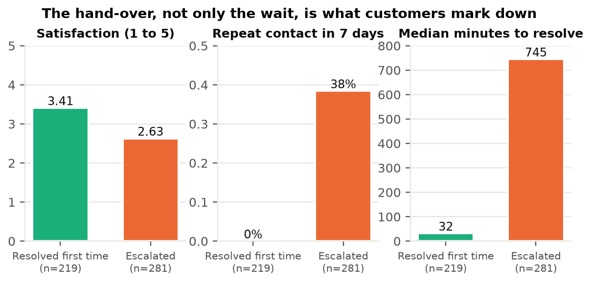
Compliance, security, feature and unclear requests are 87 tickets, 17.4 per cent of volume, but 28.7 per cent of historical agent minutes (Figure 3). None can be answered from the articles, all were escalated, and they carry the lowest satisfaction (2.63) and the highest repeat rate (37.9 per cent). Security incidents alone have a median resolution of 734 minutes. These are the tickets the head of support wants his people freed for, and the tickets the tier two engineer would never automate. The Dataset Guide marks them must_not_auto_respond; auto-answering one is a governance failure rather than a scoring loss, so the router treats them as a hard rule before any confidence is consulted.
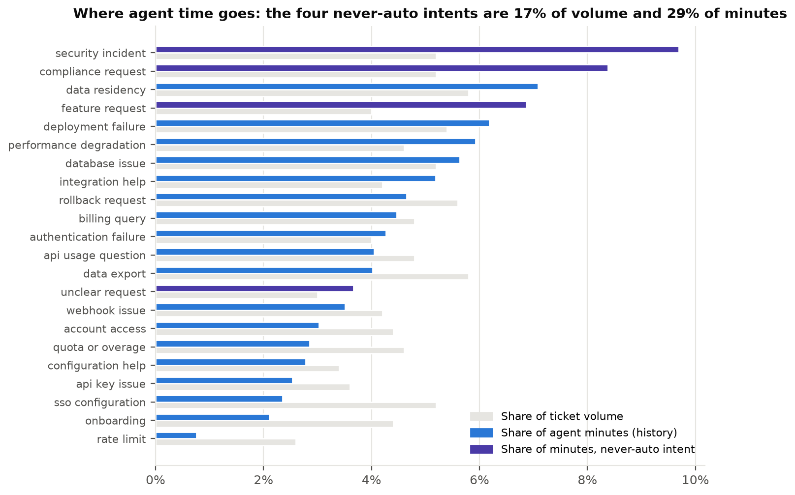
The transcripts disagreed on four points. First, whether the problem is speed or tickets bouncing: the escalation figures above show the tier two engineer was right almost exactly, with 49.1 per cent of escalations answerable against his "about half". Second, whether non-fluent customers get the worst outcomes, as the tier one agent believed: in the human baseline they do not (satisfaction 3.04 against 2.95, first-contact resolution 45.8 against 43.2 per cent), and the effect appears only for standard-tier non-fluent customers; because the Governance Framework warns that retrieval systems usually do worse on non-fluent phrasing, this became a fairness segment to re-measure on the system's own output. Third, whether the documentation or its findability is the problem: every article is used, the writer and the agent agree the content is fine, and the failure is keyword search on titles. Fourth, whether enterprise customers get faster service: they are the slowest tier on resolution time and have the lowest first-contact resolution (37.3 per cent), which turned tier into a fairness segment and a warning not to widen the gap.
Nobody mentioned repeat contacts, although the tier two engineer described creating them; nobody mentioned that the queue is sorted by age although the customer said the cost of waiting depends on urgency, and in the data high-urgency tickets have the longest median resolution (342 minutes against 132 for low); nobody could say how the eight-to-twelve-hour first-reply figure is measured, and the data has no first-reply timestamp, so resolution time is the only proxy and the service-agreement metric cannot be baselined. Channel differences also went unmentioned: documentation comments, which the brief calls "usually answerable", have the worst first-contact resolution (34.6 per cent) and the highest repeat rate (33.3 per cent); all 155 chat tickets have an empty subject, which shaped the ingest requirement.
The 500 tickets carry a customer name and identifier on every record, so private data is present and must never reach a reply; a scan of the free text found no emails, keys, card or phone numbers. The 29 articles share a fixed structure (Symptoms, Common causes, Resolution, Notes), which informed the chunking decision, and every article shows zero days since review, so no staleness signal exists. The 200 reference answers share the same three forbidden claims on every record (a refund issued, fixed on our side, a delivery date), which became the tone guardrail; 141 of them have an empty must-mention list and 79 are a generic template, so only 121 are usable as a quality standard. The development set repeats bodies (215 distinct among 500) and 35 duplicate-body groups carry both an auto-respond and an escalate label, which set a ceiling on routing accuracy that Section 7 returns to.
The product requirements document (Stage 2 workbook, version 2.0) was written from the discovery workbook and revised after the build; every requirement names the workbook row that produced it, and Section 9 records what changed. Table 1 lists the functional requirements as they stand in version 2.0, with the discovery evidence and the component that implements each. Table 2 lists the non-functional requirements with the way each was verified.
Finding one (answers exist, delivery fails) produced FR-03 and FR-04, retrieval over the 29 articles with a relevance threshold, and FR-07, drafting only from retrieved passages with a citation on every factual sentence. It also produced the "will not" requirement FR-17: no drafting from private files. Finding two (the hand-over loses context) produced FR-08, the escalation package with summary, sources, draft and uncertainty, and FR-12, the disclosure line the customer asked for. Finding three (never-auto intents) produced FR-06, the hard rule, and the head of support's failure conditions produced FR-05 (a measured threshold with a plain-language reason), FR-09 and FR-10 (guardrails that block), and FR-11 (the decision log for the compliance review). The Build Specification's gate produced FR-13, FR-14 and FR-18: an unattended harness with input and output paths, resilience to provider failure, and a single-ticket endpoint for the graders' hand-submitted tickets.
| ID | Requirement (condensed) | Priority | Discovery evidence | Implemented in |
|---|---|---|---|---|
| FR-01 | Accept tickets from email, chat, docs comment and forum and normalise them into one record keeping original text and channel; tolerate empty subject, missing fields, odd characters. | Must | §2 row 2 (four channels; all chat subjects empty) | src/ingest.py |
| FR-02 | Assign one of 22 intents and an urgency with a calibrated confidence in [0,1] and record alternatives. Intent is the weighted vote of the 7 nearest labelled development tickets; the language model supplies the instruction-like flag and reason; on provider failure the neighbour intent is kept and the reason names the outage. | Must | §1 Marcus row (no breakdown known); §3 step 2; §2 rows 3, 4 | src/classify.py, src/calibration.py, PR-02 |
| FR-03 | Find the passages of the 29 articles relevant to the ticket and return them with article ids and scores. | Must | §2 row 8; §1 Ines and Sofia rows; §3 step 4 | src/retrieve.py |
| FR-04 | Apply a relevance threshold (0.40 cosine, from development data) that removes off-topic passages and returns nothing rather than irrelevant text; non-answerable tickets are the router's job. | Must | §2 row 8 (143 non-answerable); §1 Ines row | src/retrieve.py |
| FR-05 | Decide auto-respond or escalate with a data-derived confidence threshold, deterministically, recording a plain-language reason. | Must | §3 step 6; §1 Marcus row; §4 row 7 | src/route.py |
| FR-06 | Always escalate compliance, security, feature and unclear requests regardless of confidence. | Must | §3 row 6; §5 risk 5; §1 Daniel and Sofia rows | src/route.py |
| FR-07 | Draft only from retrieved passages and say plainly when unsure; every factual sentence verified against a passage (sentence cosine or lexical containment, and no NLI contradiction), cited by code where the model omitted it; an unverifiable sentence blocks the draft. | Must | §1 Sofia row (draft plus page); §3 step 5; §5 risk 1 | src/generate.py, src/guardrails.py, PR-03 |
| FR-08 | Every escalation carries a summary, the predicted intent, the retrieved article ids, the draft, and what the system was unsure about. | Must | §1 Daniel row; §3 step 7; disagreements row 1 | src/escalation.py, PR-04 |
| FR-09 | Scan every outbound draft for private data (names, ids, keys, addresses); block and escalate if found, never redact and send. | Must | §5 risk 2; §5 source 1 | src/guardrails.py |
| FR-10 | Block any draft with a factual sentence unsupported by or contradicted by the passages, or stating a refund issued, a fix on CloudServe's side, or a delivery date; headings, symptom and cause lines and courtesy sentences are not claims; an expected false-block rate of 2 to 3 per cent is accepted. | Must | §5 risks 1 and 6; §5 source 3 | src/guardrails.py |
| FR-11 | Write every automated decision (classification, routing, generation, validation) to a persistent log with the Governance Framework's minimum fields; the harness reconciles rows to tickets after every run, including failures. | Must | §1 Marcus row (compliance review); §4 row 7 | src/logging_store.py, evaluation/harness.py |
| FR-12 | Every automated reply states that it was drafted automatically and that a person will confirm if needed. | Should | §1 Ravi row | src/generate.py |
| FR-13 | Process an entire ticket file in one unattended run, taking input and output paths as arguments, and produce a metrics report with volume, business, technical and governance figures. | Must | Build Spec A9, A10; §5 source 1 | evaluation/harness.py, evaluation/metrics_report.py |
| FR-14 | Continue when retrieval returns nothing, the provider times out, is rate limited or unavailable, and when input is malformed. | Must | §5 risk 10; Build Spec A11 | src/llm.py, src/pipeline.py |
| FR-15 | Separate ticket text from the system's own instructions so customer text cannot redirect it. | Must | §5 risk 9 | All prompts; src/guardrails.py; src/route.py |
| FR-16 | Flag every ticket with a predicted urgency and offer ordering by it; advisory only, since predicted urgency is near the majority baseline. | Could | §2 row 4; §1 Ravi row; nobody-said row 3 | src/classify.py, harness --sort-urgency |
| FR-17 | Will not answer feature requests, roadmap or timing questions, or draft from agents' private files. | Will not | §1 Ines and Daniel rows; §5 source 3 | Corpus is the 29 articles only |
| FR-18 | Expose a single-ticket endpoint (POST /tickets) returning the decision, the draft with citations or the escalation package, and the guardrail verdicts; GET /decisions/{id} and GET /health. | Must | Build Spec §06 steps 5 to 7; Stage 5 log | src/api.py |
| ID | Category | Requirement | Verified by |
|---|---|---|---|
| NFR-01 | Latency | p95 under 3 s for the local pipeline; provider round trips reported separately and the end-to-end 3 s figure recorded as not achievable with a remote free-tier model. | Harness timing, median and p95, live and cached runs (Section 7.5) |
| NFR-02 | Availability | 99.5 per cent; with the provider down the system escalates rather than stops. | Disconnected-provider run in CI on every push |
| NFR-03 | Accuracy | Intent precision at least 85 per cent per class; citation accuracy at least 95 per cent; hallucination at most 5 per cent. | Per-class report and confusion matrix; citation check; grounding review of blocked drafts (Section 7) |
| NFR-04 | Privacy | Zero private data in outbound text. | Automated scan of every draft; trigger ticket in tests |
| NFR-05 | Auditability | 100 per cent of decisions logged and reconciled; each entry names prompt version and requirement ids. | Reconciliation in every run report |
| NFR-06 | Fairness | Under 5 points variation in routing quality across fluency, tier, region, ticket length and channel, judged with 95 per cent Wilson intervals. | python -m evaluation.fairness_audit (Section 8.3) |
| NFR-07 | Cost | The paid llama-3.1-8b endpoint at about $0.03 per 500 tickets; replies cached; 20 requests per minute pacing; project total under $0.25. | Provider usage page after each run |
| NFR-08 | Calibration | Stated confidence within 5 points of observed accuracy in every band with at least 20 tickets. | Calibration table in every metrics report |
| NFR-09 | Determinism | Same input, same routing decision. | tests/test_route.py; the router makes no model call |
The chain the assessors are asked to test runs from a workbook row to a requirement to a specification row to a prompt or module to a test. The Stage 3 workbook holds the specification for every functional requirement and a traceability table naming the test identifier for each; the prompt register (Appendix B) names the requirement each prompt serves; every decision-log row carries the requirement ids and the prompt version that produced it, so the chain is queryable at run time as well as on paper. Two examples: FR-06 traces to Stage 1 section 3 row 6 and section 5 risk 5, is implemented by the never-auto rule in the router, is tested by tests/test_route.py, and is reported as "must-not-auto-respond violations" in every run (0 of 580 tickets). FR-07 traces to the tier one agent's request for "a draft plus the relevant page", is served by prompt PR-03 version 1.2 and the grounding check, is tested in tests/test_generate.py and tests/test_guardrails.py, and is reported as citation resolution (100 per cent) and grounding blocks.
Deliberately not built: replacing agents; automatic answers for the four never-auto intents; any commitment about refunds, fixes or dates; writing or editing documentation; consolidating private files; live connectors to the four channel systems; direct measurement of time to first reply; translation of non-fluent tickets; and a feedback loop from agent corrections, for which the pack contains no data. Four questions remain open for the client at submission: where the eight-to-twelve-hour figure comes from and whether first-reply timestamps can be supplied; whether billing and data-residency tickets should follow the labels (answerable) or the tier two engineer (always escalate); the enterprise agreement terms; and who scores the satisfaction proxy and on what sample.
Figure 4 shows the shape of the system: six components in sequence over three cross-cutting concerns, following the Project Brief's starting point with the departures explained below. One process() function in src/pipeline.py runs the chain for both the batch harness and the single-ticket API, so the two cannot drift apart. The model provider (OpenRouter, Llama 3.1 8B at temperature 0) sits behind a client with a timeout, backoff, a retry cap and an on-disk reply cache; the vector store (Chroma, local) and the two small local models (the all-MiniLM-L6-v2 embedder and a MiniLM NLI cross-encoder) sit behind injectable interfaces, so the whole test suite runs offline with fakes.
The 29 articles share four sections, and the Dataset Guide warns that splitting inside a resolution sequence produces passages that retrieve well but read incomplete. Two chunkings and two search strategies were measured on the 357 answerable development tickets before choosing (Figure 5). One chunk per section with the title prepended (116 chunks) found the expected article first for 90.5 per cent of tickets and within the top five for 98.9 per cent, against 87.4 and 97.2 for whole articles; the embedder truncates at 256 tokens and a whole article of 250 to 300 tokens loses its Notes. Hybrid BM25 with reciprocal rank fusion, which the Project Brief's diagram suggests, was measured and not adopted because it lowered both figures on section chunks.
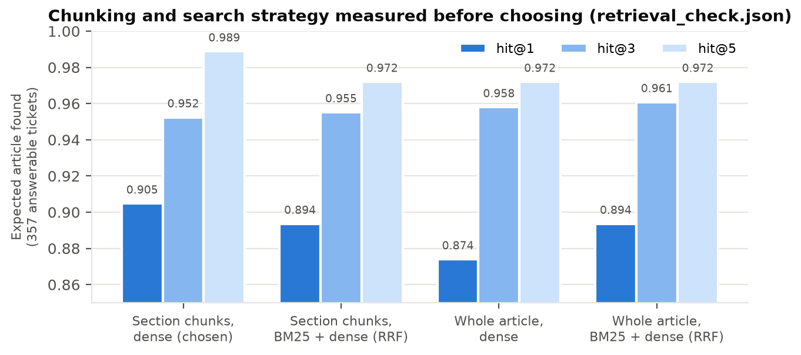
evaluation/results/retrieval_check.json. Section chunks with dense search were chosen.The relevance threshold of 0.40 cosine keeps 97.8 per cent of answerable tickets and returns nothing for every unclear request (median top score 0.265). The measurement also produced the first design change: the threshold cannot detect that no article exists, because non-answerable tickets score almost as high as answerable ones (median top score 0.635 against 0.644). A feature request about spend caps resembles the spend-caps article. So the threshold removes only off-topic text, and deciding that a compliance, security or feature request must not be answered became the router's and the classifier's responsibility. FR-04 was reworded to say so.
The requirements assumed a small free-tier model would classify 22 intents at 85 per cent precision. Measured on all 500 development tickets, the model alone reached 71.0 per cent accuracy and 79.8 per cent macro precision (Figure 6, left). A second signal was therefore added: a cosine nearest-neighbour vote (k = 7) over the labelled development tickets using the same embedding as retrieval. It is deterministic, costs nothing, has no rate limit and keeps working when the provider is down. Excluding each ticket from its own vote, it reaches 99.2 per cent accuracy, or 98.0 per cent when near-duplicate neighbours are also excluded, which is the better guide to unseen tickets. When the two signals agree (70.4 per cent of tickets) the intent is right every time; when they disagree the model is right 2 per cent of the time. The neighbour intent is therefore final, the model's intent is recorded as the first alternative, and the model still supplies the instruction-like flag and the reason.
Calibration matters because the routing threshold is meaningless without it. The model's verbalised confidence is over-confident in the way the literature on instruction-tuned models predicts, so it is treated as a feature rather than a probability. The routing confidence is a calibrated function of the neighbour vote share and the agreement between signals. Platt scaling, planned in Stage 3, degenerated: with four errors in 500 an unregularised fit is a step function and a regularised one is flat. Histogram binning with Laplace smoothing and enforced monotonicity was used instead; five-fold cross-validated on the development set it gives an expected calibration error of 0.006 with every band within 5 points, and 0.013 on the validation run (Figure 6, right). Urgency turned out to be barely predictable from text in this data: model, neighbours and the majority baseline all sit at 45 to 49 per cent, so FR-16 was downgraded to an advisory flag.
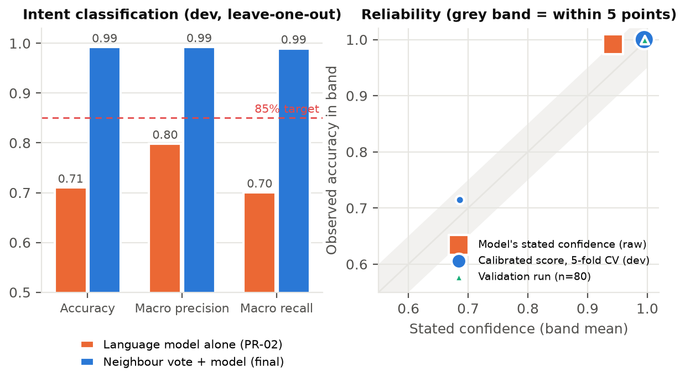
Routing is a decision table with no model call and no randomness, checked in a fixed order (Table 3); the first rule that fires decides, and each rule writes a plain-language reason and the threshold applied into the log. The threshold of 0.80 was derived with the selective-classification cost rule: with a calibrated probability of being correct, escalate when that probability is below one minus the ratio of the cost of escalating to the cost of a wrong answer. The head of support put an escalation at about four times a resolved ticket and a wrong answer as worse than waiting. Sweeping the ratio over the development set, ratios up to 3 imply a threshold of 0.67 and ratios of 4 and above imply 0.75 to 0.90, all of which route identically because the calibrated confidence is bimodal: 0.69 when the two signals disagree, 0.99 or higher otherwise (Figure 7). The value 0.80 is the conservative reading of "rather say nothing than something wrong", and the expected-cost difference between the two regimes is 1.4 per cent.
| # | Rule | Fires when | Action | Requirement |
|---|---|---|---|---|
| 1 | kill_switch | The operator has stopped automatic answers (environment setting or flag file). | Escalate | Governance §5 |
| 2 | classification_failed | The provider was unavailable or its output unparseable; confidence is 0. | Escalate | FR-02, FR-14 |
| 3 | instruction_like_input | The classifier or the pattern check flagged instructions aimed at the system. | Escalate, input kept for review | FR-15 |
| 4 | never_auto_intent | Intent is compliance, security, feature or unclear request. | Escalate | FR-06 |
| 5 | low_confidence | Calibrated confidence below 0.80. | Escalate | FR-05 |
| 6 | learned_not_answerable | (off) Neighbours say tickets like this were not resolved from the documentation. | Escalate | measured, not adopted |
| 7 | no_grounded_source | No passage scored above the 0.40 threshold. | Escalate | FR-04 |
| 8 | plan_restriction | (off) The article to be cited applies to other plans than the customer's. | Escalate | measured, not adopted |
| 9 | confident_and_grounded | None of the above. | Auto-respond; guardrails may still block | FR-05, FR-09, FR-10 |
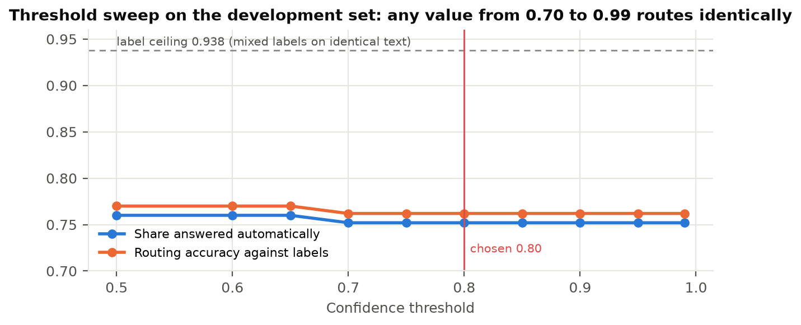
evaluation/results/route_check.json). The dashed line is the ceiling imposed by identical texts carrying different labels.The drafter (prompt PR-03) receives the retrieved passages as labelled blocks and the ticket inside <ticket> tags after the rules, returns JSON, and marks each factual sentence with the article id in square brackets. Every marker is validated against the passages retrieved for that ticket; anything else is dropped and reported, which is what makes criterion A6 hold by construction. The disclosure line is appended by code, not by the model. Four guardrails then run on every draft, all local so they keep working during an outage: private data (exact match on the ticket's own customer name and id plus patterns for keys, emails, phones, cards and addresses), tone (the three universal forbidden claims from the reference answers and regex families around them), injection (pattern check on the ticket, with the classifier's flag as a second signal), and grounding. Grounding compares every factual sentence with the passages at sentence level: best cosine over passage sentences, lexical containment, and an NLI contradiction score from a cross-encoder against the matched passage sentence. Supported but uncited sentences get their marker attached; unsupported or contradicted sentences block the draft with the sentence quoted in the reason. A blocked draft is never sent; it travels to the engineer inside the escalation package.
The decision log is SQLite in write-ahead mode with synchronous writes and no update or delete path, so it is append-only. Each ticket writes a classification, a routing, a generation and a validation row; a blocked ticket writes a second generation row for the escalation summary. The row is the Governance Framework's minimum record (Appendix D), including the prompt version and the requirement ids, and the input summary is the ticket text only, never the customer fields. The harness reconciles rows against tickets after every run and writes the result into the metrics report.
Table 4 lists the alternatives that were considered and the evidence behind each choice. The rule applied throughout the build was that a departure from the pack's suggested design, or a change to the requirements, had to be measured on the development set before it was adopted, and the measurement kept.
| Decision | Alternative considered | Evidence and outcome |
|---|---|---|
| Chunking | Whole article per chunk | hit@1 0.874 against 0.905 for sections; sections chosen. |
| Search | Hybrid BM25 with rank fusion (Project Brief diagram) | hit@1 0.894 and hit@5 0.972 against 0.905 and 0.989; dense only. |
| Intent signal | Language model alone; few-shot prompt | Model alone 0.710 accuracy; a worked example leaked verbatim into an answer in the drafter; neighbour vote primary. |
| Calibration | Platt scaling | Degenerated to a step or a flat function; smoothed binning, ECE 0.006. |
| Routing rules | Plan-applicability rule; learned answerability | Routing accuracy 0.784 to 0.756 (28 expected auto-answers lost) and to 0.762; both kept in code, off by default. |
| Grounding | Chunk-level cosine only; Guardrails AI hub validators | Chunk cosine passed a known inverted fact and blocked 31 of 57 correct drafts; Guardrails AI needs 23 to 45 extra packages and a newer openai pin than the pack's stack; sentence-level checks with NLI built locally. |
| Decision log | PostgreSQL (diagram) | SQLite with WAL is append-only, needs no server in the graders' clean checkout, meets A8. |
| Model endpoint | The free variant of llama-3.1-8b | Capped at 50 requests a day, cannot complete a run; the paid endpoint costs about $0.03 per 500 tickets. |
| Retrieval cap | At most one or two chunks per article so more articles reach the drafter | Hit rate 0.933 to 0.938 at best (two tickets); not adopted. |
The build followed the Stage 4 sprint plan as nineteen backlog items, B-01 to B-19, in dependency order: environment and ingest, chunking and retrieval, the harness, the classifier, routing, generation, guardrails, the decision log and pipeline, the full unattended run, then the API, CI, monitoring, the fairness audit, governance, the requirements revision and the README rehearsal. Each item had a definition of done written before work started, tests written before the module, and a measurement on the development set before any design choice was adopted; the evidence for every decision is recorded in Docs/architecture.md. The repository holds 78 tracked source, test, prompt and configuration files (Appendix E), 18 modules under src/, eight scripts under evaluation/, and 152 tests that run offline in under ten seconds because every test uses fakes for the provider, the embedder and the NLI model. Continuous integration runs the suite and then the real pipeline over four sample tickets with the provider disconnected on every push, asserting that all four escalate with a reason and that the log reconciles. A small standard-library client (python -m src.client) prints the API's replies, the decision log, the live Prometheus metrics and a harness run summary in a readable layout, and can send a whole ticket file through the API so the Grafana dashboard, verified against a running Prometheus on 20 September, moves as the tickets are processed.
The harness follows the Build Specification literally: python -m evaluation.harness --input <file> --output <dir> processes any file in the ticket schema, appends one result row as each ticket completes so an interruption loses nothing, turns any component failure into an escalation row carrying the error, and writes the metrics report, a readable summary, the run metadata (including the git version and the count of runs on that input) and a Prometheus snapshot with no further step. Labels are optional; with them the report adds accuracy figures.
The pinned stack did not resolve. The pack's requirements.txt fails as shipped: langchain-openai needs a newer openai than the pin, fastapi excludes the pinned pydantic, chromadb 0.3.21 needs a C++ toolchain on Windows, and Python 3.13 cannot build pandas 2.0.0. Eleven pins were changed, each to the nearest version satisfying its neighbours, and Python 3.11 was adopted, matching the pack's own CI template. The full table with a reason per pin is in the architecture notes. This cost most of the first build day and is the reason the README says which interpreter to use in its first line.
The drafter's citations needed three prompt versions. Figure 8 shows the iteration on the same 20 tickets. Version 1.0 cited correctly but on only 23 per cent of factual sentences. Version 1.1 added a worked example and a threat that uncited sentences would be removed: citation rose to 65 per cent, but the 8B model copied the example sentences verbatim into an unrelated billing answer and shortened answers to as few as 13 words, halving coverage of the reference must-mention points. Version 1.2 removed both, described the marker form with a placeholder, and asked for full prose first. The residual 47 per cent of uncited sentences turned out to be greetings, closings and steps copied from the passage without a marker, which is why citation was moved out of the prompt and into code: the grounding check verifies every sentence and attaches the marker mechanically when the sentence is supported.
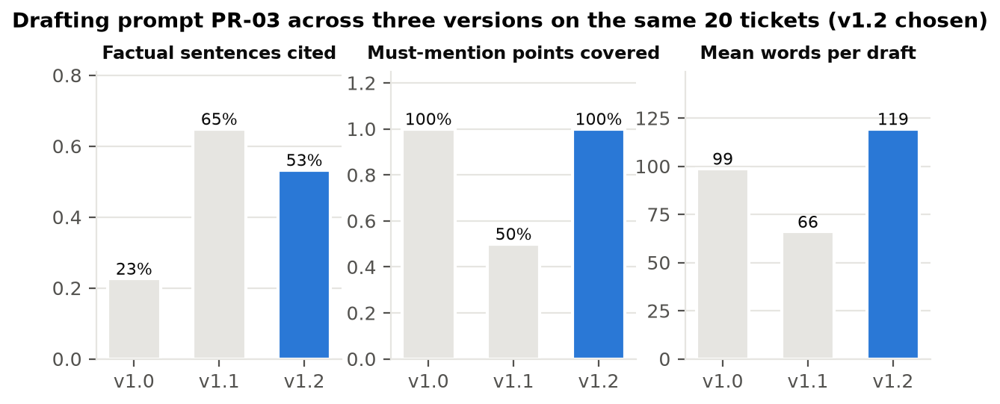
evaluation/results/generate_check*). Version 1.2 restored full-length answers and full coverage; citations are completed by the grounding check.The grounding guardrail was the hardest component to get right. Figure 9 traces it. The first design, chunk-level cosine similarity, passed a known inverted fact (a draft said containers pick up new values "without a restart"; the article says they need a redeploy) while blocking 31 of 57 correct drafts. Moving the NLI premise to the sentence level caught the inversion at a contradiction score of 0.965; adding sentence-level cosine and lexical containment, a contradiction threshold of 0.85 and a filter for courtesy sentences brought false blocks to zero on the tuning set. The first full run then blocked 43 of 500 tickets, 37 of them wrongly, for three new reasons: the NLI premise was a heading or a Symptoms line, which any resolution step contradicts; plan applicability lived in the passage metadata rather than its text; and narration sentences such as "Please follow the steps outlined in our documentation" were scored as claims. Each was fixed with a test first. The final run blocks 6 of 500, all genuine by the rule, at about half a second per draft on CPU.
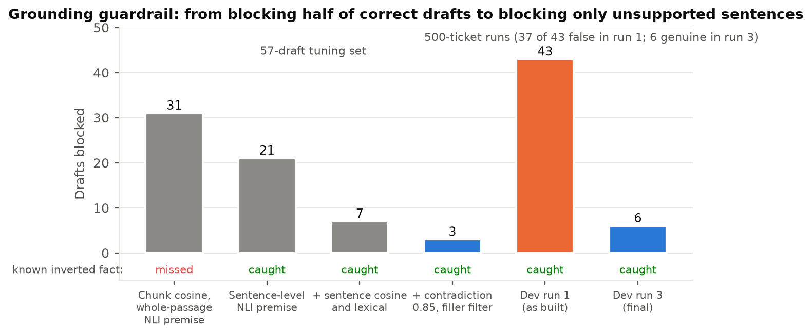
evaluation/results/guardrail_check.json) and in the first and final full development runs. The known inverted fact is caught at every stage after the first.Two things only the full run exposed. The first end-to-end run reported intent accuracy of exactly 1.000, which was memorisation: the neighbour memory is the development set, so every development ticket found itself. The classifier now excludes a ticket with identical text from its own vote, and every development figure in this report is leave-one-out; the validation and hidden sets are never in the memory, so production is unaffected. The same run showed that the harness had never called the log's reconcile function: criterion A8 was asserted, not checked. The harness now reconciles after every run, writes the result into the report, and writes the routing and validation rows itself when the pipeline raises, so failures reconcile too.
The clean checkout failed once. The first CI run failed 26 tests because the four build prompts had never been committed: the packaging rule build/ in .gitignore also matched prompts/build/. Locally everything passed because the files were on disk. This is exactly the failure the Build Specification predicts for step two of the graders' procedure. The rules were anchored to the repository root, every ignored path reviewed, and the README rehearsed in a fresh clone on this machine; the rehearsal found three more gaps (a virtual environment created without pip, Windows' 260-character path limit in a deep folder, and uncommitted sample tickets), each fixed before the rehearsal was repeated and passed.
Three things. The grounding check and the citation attachment live in the guardrails module because that is where they were measured, but they are logically part of generation and should move there, leaving the guardrail as a pure verdict. The neighbour memory is loaded from the development file path at start-up; in production it should be a versioned artefact with its own hash in the decision log, because a change to the memory changes every intent. And the harness, the API and the measurement scripts each build their own settings; a single application factory would remove the duplication that the API's thread-safety fix revealed.
Three runs are reported, all on 16 September 2026 with code versions 2576f80 to ab696a0 and the meta-llama/llama-3.1-8b-instruct model. The development set (500 tickets) was run three times on the same output directory; run 1 is the honest end-to-end run as built, run 3 is the final system with the fixes of Section 6.2 and cached provider replies, and both are archived. The validation set (80 tickets, same schema) was restored after the build and run once for evaluation, with the live provider, in 460 seconds with no errors; the file itself was not opened and nothing was tuned on it. It was run again on 20 September 2026 solely to record the unattended run for the video, with the model replies served from the on-disk cache and the code unchanged, which reproduces the 16 September output exactly; no figure in this report comes from that demonstration run. A fourth, oracle run replaced the router with the labels to find the best first-contact resolution the labels allow. Every figure below is computed by the harness and written to metrics.json; nothing was calculated by hand afterwards. Headline rates carry 95 per cent Wilson intervals because the graded set is small. First-contact resolution is defined as answered automatically and not blocked, escalation as everything else, and routing accuracy as agreement with the labels' expected route. Repeat contacts and customer satisfaction cannot be observed offline; the satisfaction proxy (PR-07 rubric) exists but no scorer or sample was agreed, so no satisfaction figure is claimed.
| Measure | Baseline | Target | Validation (n=80) | Development (n=500) | Confidence in the figure and notes |
|---|---|---|---|---|---|
| First contact resolution | 42% (client); 43.8% (dev history) | 60% | 75.0% (64.5 to 83.2) | 77.4% (73.5 to 80.8) | Offline definition; labels allow at most 62% with perfect routing (oracle run). See 7.4. |
| Time to first reply | 8 to 12 h | < 5 min | median 6.0 s, p95 13.7 s | median 2.4 s, p95 16.8 s (run 1, live) | Time for the system to produce its reply; no field exists to baseline the human figure. |
| Satisfaction proxy | 3.2 / 5 | 4.0 | not measured | not measured | Rubric exists (PR-07); scorer and sample not agreed. Stated plainly rather than estimated. |
| Escalation rate | 58% (client); 56.2% (dev) | ≤ 30% | 25.0% (16.8 to 35.5) | 22.6% (19.2 to 26.5) | Includes blocked drafts (4 and 6). |
| Classification precision | — | 85% per class | macro 99.1%; account_access 0.80 (n=4) | macro 99.2%; lowest 0.88 (account_access) | Leave-one-out on development; near-duplicate bodies make 0.98 the better guide. |
| Hallucination rate | — | ≤ 5% | 4 of 64 drafts blocked (6.3%) | 6 of 393 drafts blocked (1.5%) | Automated sentence-level check, not the two-assessor human review the framework asks for; two of the four validation blocks are narration sentences. See 7.6. |
| Citation accuracy | — | 95% | 100% resolve; 73.3% cite the expected article | 100% resolve; 72.6% cite the expected article | Resolution is by construction; the second figure counts citing a related article as a miss. |
| Latency p95 | — | < 3 s | 13.7 s (live) | 16.8 s live; 0.53 s local pipeline | Not met with a remote free-tier model (NFR-01). |
| Availability | — | 99.5% | 0 failed tickets | 0 failed tickets; disconnected-provider run 4/4 escalated | No crash in 580 tickets plus the induced outage; not a measured uptime. |
| Private data occurrences | — | 0 | 0 | 0 | Scan of every draft; block path proven by a trigger ticket in tests. |
| Never-auto violations | — | 0 | 0 of 80 | 0 of 500 | Hard rule; reported on every run. |
| Cross-group variation | — | < 5 pts | 8.7 to 28.6 pts by group; no segment separated | 2.6 to 11.7 pts; no segment separated | Point condition not met; intervals overlap on every segment. Section 8.3. |
| Calibration | — | within 5 pts | ECE 0.013; band 0.8 to 1.0 (n=79) within 0.4 pts | ECE 0.005; band 0.8 to 1.0 (n=486) within 0.4 pts | Judged on bands with at least 20 tickets. |
| Decision-log coverage | — | 100% | 324 rows, 80/80 | 2006 rows, 500/500 | Reconciled by the harness after the run. |
Figure 10 puts the two business figures against the baseline and the targets. Both sets clear the targets, the validation intervals are wide because 80 tickets is a small sample, and the development and validation figures are within 2.4 points of each other, which is what the Dataset Guide predicts for a system that was not tuned toward a number. Figure 11 shows what happened to every development ticket and why: 387 answered, 86 escalated by the never-auto policy, 11 for low confidence, 9 because no passage cleared the threshold, 6 blocked by the grounding check, and 1 flagged as instruction-like.
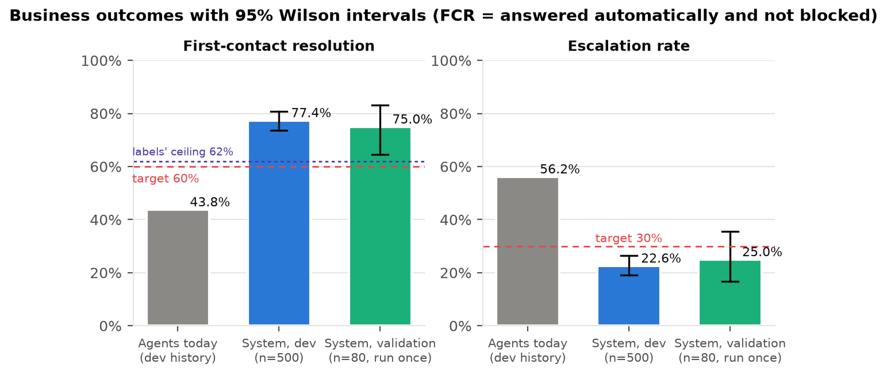
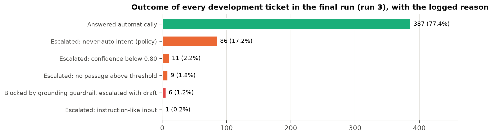
results.jsonl.Routing accuracy against the labels is 77.2 per cent on the development set and 75.0 per cent on validation, against a ceiling of 93.8 per cent set by the 35 groups of identical ticket bodies that carry both labels. Figure 12 decomposes the 114 development disagreements: 95 are automatic answers on tickets the labellers marked for escalation, concentrated in answerable-looking intents (rollback, database, performance) where the text does not distinguish the two routes; the remaining 19 are escalations of tickets labelled answerable, 7 because no passage cleared the threshold, 6 grounding blocks and 6 low-confidence decisions. Intent classification is shown as a confusion matrix in Figure 13: four errors in 500, three of them api_key_issue predicted as account_access, and one unclear request predicted as an authentication failure. On validation the one error, at confidence 0.69, was escalated. Retrieval found the expected article among the passages passed to the drafter for 93.3 per cent of answerable development tickets and 96.2 per cent of validation ones; of the 24 development misses, 8 had no passage above the threshold and 16 ranked a different article first.
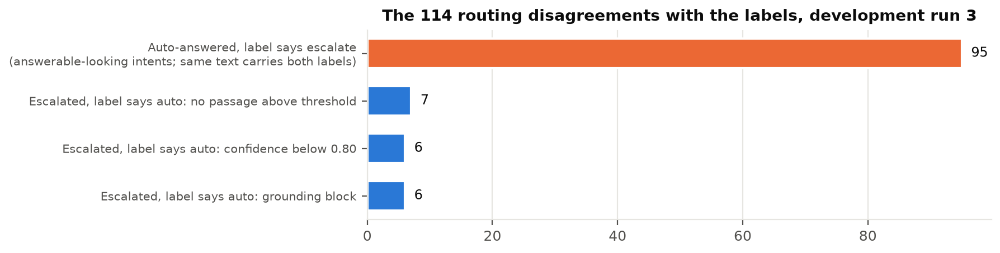
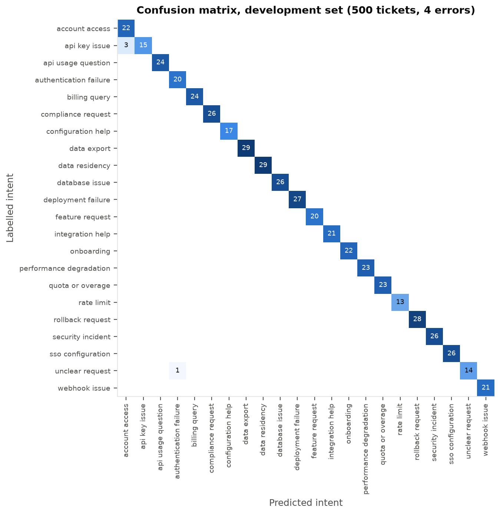
evaluation/results/confusion_final.csv). Per-class precision and recall for both sets are in Appendix C.Taken at face value, the system clears both business targets on both sets: resolution of 75.0 per cent on the held-out tickets against a target of 60 and a baseline of 42, escalation of 25.0 per cent against a target of 30 and a baseline of 58, with the development set within 2.4 points of both. I would not present those figures to Marcus as the improvement he will see. Resolution here means that the system sent a cited answer and nothing blocked it; it does not mean the customer was satisfied or did not write back. The labels put a ceiling of 62 per cent on what a perfect router could score, and the system sits above that ceiling because 95 of its 114 routing disagreements are automatic answers to tickets whose text is identical to tickets the labellers marked answerable, but which they marked for escalation. My reading is that most of those are label policy rather than system error, because the same words cannot carry two routes, and the intents involved (rollback, database, performance) are ones where the labellers themselves split. But I cannot prove that offline, and the honest claim is narrower: the system removes the human bottleneck on the 71 per cent of tickets that have a documented answer, and whether the customer accepts those answers is what a pilot must measure. What I would promise is the direction and the mechanism, not the 75.
The technical figures say the components are trustworthy within the population they were built on. Intent precision of 99 per cent is real but it is a property of the neighbour memory as much as of the model: the memory is the labelled development set, and the hidden set comes from the same population. A new ticket type, or a change in how customers phrase an old one, would not show up as wrong intents first; it would show up as falling confidence and rising escalations, which is the safe direction to fail in and is visible on the dashboard. The latency result is the one target I missed, and it is worth being precise about what missed it. The pipeline itself, including retrieval, the neighbour vote and the NLI check, runs in half a second; the 13.7 seconds is two or three round trips to a free-tier provider at twenty requests a minute. For an email or forum ticket that replaces an eight-hour wait, fourteen seconds is irrelevant; for live chat it is not, and the fix is a faster or local model, not a different pipeline. The hallucination figure is the least settled number in the table. The automated check blocked 1.5 per cent of development drafts and 6.3 per cent of validation drafts, but two of the four validation blocks were courtesy sentences, so the check is conservative rather than precise, and the two-assessor human review the framework asks for was not done. Until it is, the right statement is that no draft with an unsupported factual claim reached a customer in 580 tickets, which is a statement about the guardrail, not about the model.
On fairness, the point condition of five points is not met on most groups, but no segment is statistically separated from the best on either set, and at 80 tickets a single ticket moves some segments by more than the condition itself. The one effect I believe is real is the one the Governance Framework predicts: non-fluent tickets retrieve the expected article less often on the development set, 88.5 against 94.8 per cent, even though their routing quality is within three points. I would treat that as a finding to watch in a pilot, with a larger sample and the intervals that come with it, rather than as evidence of bias today. Overall, the numbers support deploying this system into a pilot with agents reviewing every blocked draft and a sample of automatic answers; they do not yet support the claim that CloudServe's first-contact resolution will rise from 42 to 75.
Figure 14 shows the per-ticket latency distribution. With cached provider replies the pipeline, including embedding, retrieval, the neighbour vote and the NLI check, takes a median of 0.35 seconds and a p95 of 0.53. With the live provider the median is 2.4 to 6.0 seconds and the p95 13.7 to 16.8, because each answered ticket makes two or three provider round trips at the free-tier pacing of 20 requests a minute plus backoff. The 3-second target is therefore met by the software and missed by the provider; this was recorded in NFR-01 rather than hidden, and the Build Specification states that provider degradation is not counted against the work. Resilience was tested by induction: with the API key removed and the reply cache emptied, all four sample tickets escalated with the reason "provider unavailable", the neighbour intent was kept, 16 log rows reconciled, and nothing crashed; the same check runs in CI on every push. Malformed input (an empty object, an unknown channel, control characters, a body that is not an object) produces a decision or a 422, never a crash.
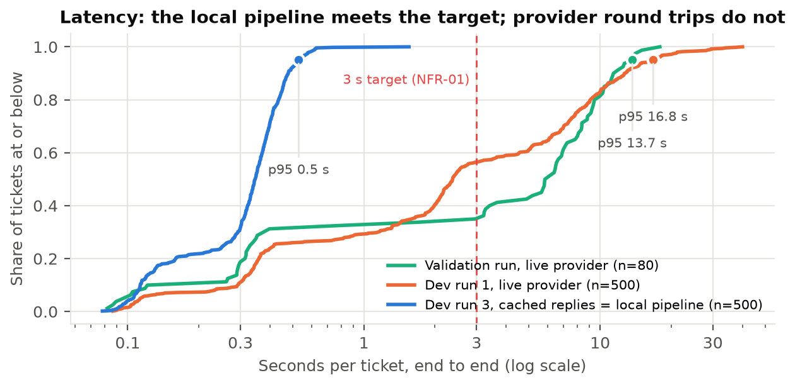
The figures above should be treated with caution because of the following. First-contact resolution and escalation are offline definitions: an automatic answer is counted as a resolution whether or not the customer would have accepted it, and repeat contacts cannot be observed. The labels' ceiling of 62 per cent means the system's 75 to 77 per cent includes answers the labellers would have escalated, and whether those answers were good cannot be settled without a pilot. Customer satisfaction was not measured at all, and time to first reply has no baseline in the data. Intent accuracy is measured against a memory built from the same population, so a shift in the ticket mix would not be caught by these figures. The hallucination rate is an automated sentence-level check, not the two-assessor human review the framework specifies, and half of the validation blocks were narration sentences rather than false claims, so the check is conservative rather than precise. Segment sizes on the validation set are 7 to 42 tickets, so a single ticket moves some segments by more than the 5-point condition. The validation set was run once for evaluation (a later re-run for the video used cached replies and changed nothing) and the hidden set has not been seen; the development figures were produced after fixes made on the development set, so the validation figures are the ones to trust.
The governance framework was completed in Docs/governance.md against the pack's template, section by section, with every figure taken from the recorded runs. This section summarises it. Owners are proposed from the interview roster and have not been agreed by anyone at CloudServe; until they are, the accountable person for every item is the author.
Every stage writes one row to the append-only log described in Section 5.5 (a full row is reproduced in Appendix D). The coverage check is automatic: 2006 rows for 500 development tickets and 324 for 80 validation tickets, with a routing and a validation row for every ticket, and 16 rows for the four tickets of the disconnected-provider run. Rows can be read back per ticket through the API, so a grader who submits a ticket by hand can reconcile it immediately. Because every row names the prompt version and the requirement ids, the question that follows any incident, whether the behaviour was intended, can be answered from the log alone.
| ID | Risk | Likelihood | Impact | Mitigation in the design, with measurement | Owner |
|---|---|---|---|---|---|
| R-01 | Answers confidently and incorrectly | High if unchecked | Severe | Every factual sentence verified against a passage with an NLI contradiction check; unverifiable sentences block (6/500, 4/80); citations validated (100%); calibrated confidence (ECE 0.005/0.013) with the 0.80 threshold; never-auto rule (0 violations in 580); disclosure on every reply. | Author; proposed Daniel Okonkwo |
| R-02 | Private data in an outbound response | Medium | Severe | Customer fields never enter a prompt or log summary; every draft scanned for the ticket's own name and id and for key, email, phone and address patterns; block and escalate, never redact. 0 detections in 580; block path proven by a trigger ticket. | Author; proposed Marcus Adeyemi |
| R-03 | Customer input treated as an instruction | Medium | High | Ticket text inside tags after the rules in every prompt; classifier flag and pattern check; escalate before drafting and keep the input. Validation: 1 flagged, escalated. | Author |
| R-04 | Some customer groups get worse answers | Medium | High | Fairness audit with Wilson intervals on every run (8.3); the 5-point condition is a release criterion, re-run per evaluation. | Author; proposed Marcus Adeyemi |
| R-05 | Documentation goes stale | Medium | High | Corpus is the 29 reviewed articles only; every answer names its article ids so a wrong answer points at the article; re-index is one command. Not built: an article-age escalation rule. | Proposed Ines Varga |
| R-06 | Model provider unavailable | Medium | Medium | Backoff on 408/429/5xx, 30 s timeout, reply cache; classifier keeps the neighbour intent; every ticket escalates with the reason. Proven by the disconnected run, repeated in CI. | Author |
| R-07 | Latency degrades under load | Medium | Medium | Latency histogram with p50 and p95 on the dashboard; measured p95 16.8 s live, 0.5 s local. Not load-tested; NFR-01 recorded as not met. | Author |
| R-08 | Costs rise with volume | Low | Low | About $0.03 per 500 tickets; replies cached by prompt hash; $5 spending limit on the key; volume counters. | Author; proposed Marcus Adeyemi |
| R-09 | A never-auto ticket answered automatically | Medium (17.4% of tickets) | Severe | Deterministic rule before the threshold; 0 violations in 580; reported on every run. | Author |
| R-10 | A commitment about money or timing | Medium | High | Tone guardrail blocks a refund issued, a fix on our side, or a delivery date; PR-03 forbids them; policy on billing and data residency remains an open client question. | Author; proposed Daniel Okonkwo |
The audit script segments a run by tier, fluency, ticket length (under 120 characters), region and channel and writes the framework's table with 95 per cent Wilson intervals; resolution rate is answered-and-not-blocked and quality score is routing accuracy against the labels. Figure 15 shows the result on both sets. The 5-point condition is not met as a point estimate on any group except fluency on the development set, but no gap is statistically established: every segment's interval overlaps the best segment's on both sets. On the validation set the segments are 7 to 42 tickets and one ticket moves an 8-ticket segment by 12.5 points, so the validation gaps (up to 28.6 points on ticket length) are what small samples look like rather than evidence of bias. The facts behind the larger development gaps are recorded for the author's interpretation: non-fluent tickets retrieve the expected article less often (88.5 against 94.8 per cent, n = 87 against 270), which is the effect the Governance Framework predicts, but their routing quality is within 2.6 points; short tickets score higher because 36.7 per cent of them get no passage above the threshold and escalate, which matches their labels; on validation the non-fluent gap comes with a 100 per cent retrieval hit rate and a higher share of tickets labelled escalate (57.9 against 34.4 per cent), so it is the mixed-label ceiling rather than retrieval. The full tables are in Appendix C.
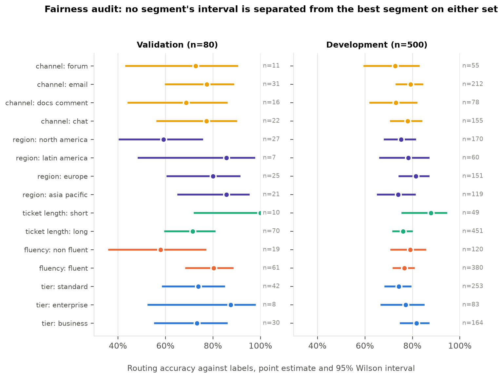
evaluation/results/fairness_audit/.All five guardrails the framework lists run inside the pipeline on every response in every run, harness and API alike, and none is behind a disable flag; the only switch is for the NLI model, and without it the cosine and lexical checks still run and still block. Private data, grounding and tone block and escalate with the draft attached to the engineer; instruction integrity escalates before any draft is written; the confidence floor is the decision table itself, where a failed classification carries confidence 0 and its own rule. Measured activations: 6 grounding blocks on development, 4 on validation, no private-data or tone blocks, one instruction-like escalation.
The incident procedure is written for an on-call engineer who has never seen the system, with the exact commands for each step: detect (dashboard or a reported answer), contain with the kill switch, assess from the ticket's log rows, notify the support manager within an hour and compliance the same day for private data or a commitment, remediate through a new prompt version or setting and a re-run on the validation set, and review by adding a trigger ticket to the test fixtures so CI checks it from then on. The kill switch has two mechanisms: an environment setting read at start-up, and a flag file written by python -m src.killswitch on that the router checks on every ticket and the pipeline checks again before an answer is released. It takes effect on the next ticket without a restart; a ticket already past routing has its draft diverted into the escalation package; tickets answered before the switch are identifiable in the log by timestamp. Five tests cover it and it was exercised once for real in the README rehearsal.
The system must never send a customer a statement that is not in the support documentation, a commitment about money or dates, another customer's private data, or any automatic answer to a compliance, security, feature or unclear request. The mechanisms that enforce this are blocking guardrails on every draft in every run, a deterministic never-auto rule ahead of the confidence threshold, a disclosure line on every reply, an append-only log that reconciles to the ticket count, and a kill switch that needs no restart. The most likely way it could still cause harm is a fluent, cited answer to a ticket that a person should have handled: 95 of 114 development routing errors are auto-answers on tickets labelled escalate, and the policy on billing and data residency is an open client question; second, a correct citation of an article that has gone stale. It would not be deployed without a pilot in which agents review every blocked draft and a sample of automatic answers, the client's decision on billing and data-residency routing, first-reply timestamps to measure the service agreement, a load test against the latency target, and the fairness audit re-run on pilot tickets with intervals that can separate.
The PRD moved from version 1.0 (7 September 2026) to version 2.0 (16 September, synchronised into the Stage 2 workbook on 17 September). Ten requirements changed, one was added and none removed; the Stage 5 revision log (Appendix F) records each with the thing that triggered it. Table 7 condenses the changes and Table 8 the assumptions that failed. Every trigger is a measurement on the development set or a failure the full run exposed, which is the point of the exercise: none of these would have been found by reading the requirements harder.
| ID | Version one said | Version two says | Trigger |
|---|---|---|---|
| FR-02 | Intent, urgency and confidence from the language model. | Intent from the neighbour vote; model supplies flag and reason; outage reason worded so it is not counted as unclear_request. | Model alone 0.710 accuracy against the 0.85 target; neighbours 0.992. |
| FR-04 | Return nothing when nothing is relevant (implying the threshold detects non-answerable tickets). | Threshold removes off-topic text only; non-answerable tickets are the router's job. | Non-answerable median top score 0.635 against 0.644. |
| FR-07 | A citation on each factual claim. | Each factual sentence verified against a passage and cited by code; unverifiable sentences block. | 38 of 70 factual sentences uncited in v1.2; inverted fact passed chunk-level cosine. |
| FR-10 | Block unsupported claims and forbidden commitments. | Adds the NLI contradiction check; headings, symptom and cause lines and courtesy sentences are not claims; 2 to 3 per cent false-block rate accepted. | Run 1: 43 blocks, 37 false. |
| FR-11 | Log reconciles with tickets processed. | Harness reconciles after every run and writes failure rows itself. | Run 1 showed reconcile() was never called. |
| FR-16 | Could: order tickets by predicted urgency. | Advisory flag only; must not be used for SLA decisions. | Urgency accuracy 0.46 to 0.49 against a 0.45 majority baseline. |
| NFR-01 | p95 under 3 s end to end. | Under 3 s for the local pipeline; provider time reported separately; end-to-end target recorded as not achievable. | First live run: median 9.9 s, p95 20 s. |
| NFR-06 | Under 5 points across fluency, tier, region. | Adds length and channel; judged with Wilson intervals. | Validation segments of a handful of tickets showed 26 to 29 point gaps. |
| NFR-07 | Free tier only, no paid calls. | Paid endpoint at about $0.03 per 500 tickets; project under $0.25. | Free variant capped at 50 requests a day. |
| NFR-08 | Within 5 points per band. | Per band with at least 20 tickets. | Run 1 failed the test on a 2-ticket band. |
| FR-18 | Not present. | Single-ticket API endpoint; Must. | Graders submit tickets by hand before the batch run. |
| Assumption | Held? | What was found |
|---|---|---|
| A small free-tier model classifies 22 intents at 85 per cent precision | Failed | 0.798 macro precision; neighbour vote made primary. |
| Confidence can be calibrated well enough for a threshold | Held after a change of method | Platt degenerated; smoothed binning gives ECE 0.005. |
| The labels' expected route is the right policy for billing and data residency | Partly failed | Identical texts carry both labels; routing ceiling 0.938; policy question open. |
| The system's first-contact resolution is comparable to the human baseline | Partly | Labels allow at most 62 per cent; the system reports 77 because it answers escalate-labelled tickets. |
| Non-fluent tickets will retrieve worse | Did not hold on routing quality | 2.6 points variation; retrieval hit 88.5 against 94.8 per cent. |
| Free-tier limits allow one unattended run | Held only with the paid endpoint | Free variant cannot complete a run. |
| Embedding similarity is enough to check grounding (not listed in v1) | Failed | Passed an inverted fact, blocked 31 of 57 correct drafts. |
| A clean clone runs from the README (implicit) | Failed once | Build prompts were gitignored; caught by CI, fixed, rehearsed. |
Nine things looked wrong and were deliberately left alone, each with its cost recorded: hybrid search, the plan-applicability rule, learned answerability, a per-article chunk cap, a few-shot classifier prompt, PostgreSQL, the Guardrails AI hub validators, a verbatim bypass around the NLI check, and adjusting the filler filter after the validation run blocked two courtesy sentences, which would have been tuning toward the set.
What the revision taught me is that every assumption in version one that failed was one I had written down without a number next to it. I assumed a small model would classify at 85 per cent because the intents looked distinct; the first measurement said 71. I assumed a retrieval threshold could tell me that no article existed; the first histogram of scores said a feature request looks exactly like the article it is asking to change. I assumed three seconds was a software target; the first live call said it was a provider target. I assumed embedding similarity was a grounding check; the first inverted fact walked straight through it. None of these would have been found by reading the requirements harder, and all of them were found within an hour of measuring. The change I would make to a version-one PRD is not more requirements but a measurement plan beside each assumption, with the number that would falsify it, so that the revision log is planned from the start rather than assembled afterwards. The other lesson is about what to leave alone: nine changes looked right and were rejected because the development set said they cost more than they gave, and the discipline of keeping those decisions with their numbers turned out to be as useful as the changes themselves.
The next steps follow from what the evaluation could not settle. A pilot on live tickets with agents reviewing every blocked draft and a sample of automatic answers would replace the offline definition of resolution with a real one and would produce the correction data the out-of-scope feedback loop needs. The client's decision on billing and data-residency routing would close the largest open policy question and remove the ambiguity that produces most routing disagreements. First-reply timestamps would let the service-agreement metric be baselined and measured. The two-assessor hallucination review the framework asks for, on at least fifty drafts, would turn the automated grounding figure into a defensible one. On the engineering side: the article-age rule (R-05), a load test against the latency target (R-07), and the restructuring listed in Section 6.3.
Whether the automatic answers on tickets the labellers would have escalated are good answers or confident ones; whether the 2 to 3 per cent false-block rate is acceptable to agents; whether the neighbour memory holds up when the ticket mix drifts, which would show first as falling confidence; whether the segment gaps that are not statistically separated at 80 tickets stay that way at 800; and what customers actually feel, since satisfaction was not measured.
I did this project in two weeks against the pack's three, with discovery and the requirements taking the first week and the whole build landing in three days from 16 to 18 September. The thing I underestimated most was not any component but the environment: the pinned dependency file from the pack did not install, and resolving eleven pins against each other took most of the first build day, which the sprint plan had budgeted at two hours. The second underestimate was the grounding guardrail, planned at four hours inside the guardrails item and revised six times over two days, because each version was right on the drafts I had and wrong on the next hundred. What was easier than I expected was retrieval: once the articles were chunked by their own section headings, the first configuration measured was the one I kept, and the whole item took an afternoon including the comparison of four alternatives.
The most useful thing I did was also the one I did too late. The first full unattended run over five hundred tickets found three defects that one hundred and six passing unit tests had not: an intent accuracy of exactly one hundred per cent that was the classifier finding each ticket in its own memory, a reconciliation check that the harness had never actually called, and forty-three blocked drafts of which thirty-seven were wrong. Each of those was a property of the system as a whole, and no test of a single module could have seen it. If I started again on Monday I would run the end-to-end harness on twenty real tickets on the first day of the build and keep it running after every item, and I would time one live provider call during setup, which would have moved the latency target from the requirements to the risk register a week earlier. The clean-checkout failure, four prompt files that a packaging rule in the ignore file had kept out of git, is the one that would have cost the most, and I did not find it; continuous integration did, on the first push, which is the strongest argument I have for setting it up before the build rather than after.
What turned out not to matter was the hybrid search experiment, the plan-applicability rule and the learned answerability signal: each took an hour or two to build and measure, and each was rejected. I do not count that time as wasted, because the rejections are what let me defend the simpler design, but I would sequence them after the gate next time rather than before it. Against the effort log, discovery took about what I planned, the build took roughly half again as much, and the report and video took the full budget; the honest summary is that I planned the parts I understood and underestimated the parts where I had to learn.
Claude (Anthropic, used through Claude Code) was used throughout this project, under the author's direction and with the author's review of every output. Its use is declared here in full, as Project Instructions section 09 requires.
src/, evaluation/, tests/ and scripts/, the CI workflow, the monitoring configuration and the Grafana dashboard were written with Claude, one backlog item at a time, with the author choosing the method (research the options, tests first, measure before adopting), reviewing each summary and deciding what was adopted, rejected or deferred; those decisions are the record in Docs/architecture.md. The author can explain every module and was asked to review each before the next item began.prompts/README.md.analysis/discovery_counts.py, which produced every count in the discovery workbook, and report/make_figures.py, which produced every figure in this report from the recorded runs.Docs/architecture.md and Docs/governance.md were written by Claude from the build evidence (governance section 6 drafted for the author's confirmation). The Stage 5 revision log sections 1 to 4 and the version 2.0 synchronisation of the Stage 2 workbook (21 cells) were entered by Claude from the build record at the author's request. For the Stage 1, 3 and 4 workbooks Claude supplied figures and quotes and the author wrote the cells. This report's narrative was drafted by Claude from the workbooks, the build record and the run outputs, and edited by the author.| # | Criterion | Evidence |
|---|---|---|
| A1 | Runs from a clean checkout by the README | README rehearsed in a fresh clone on 16 September (Windows, Python 3.11); CI installs from the pinned file on Ubuntu on every push. |
| A2 | Four channels normalised | src/ingest.py; tests/test_ingest.py; sample tickets under data/samples/; empty bodies, missing fields and control characters produce a decision. |
| A3 | Intent, urgency, numeric confidence, fallback, alternatives | src/classify.py; every result row carries confidence in [0,1] and alternatives; fallback tested with the provider disconnected. |
| A4 | Retrieval returns identifiable passages, threshold, nothing rather than irrelevant | src/retrieve.py; every returned id resolves to documentation.json; threshold 0.40 measured; unclear requests return nothing. |
| A5 | Deterministic routing with a set threshold | src/route.py makes no model call; tests/test_route.py runs the same ticket twice. |
| A6 | Citations resolve to retrieved passages; instructions separated; parseable output | Markers validated against the retrieved set (100% in both runs); ticket text in tags after the rules; JSON output with a fallback path. |
| A7 | A guardrail blocks | Four blocking checks; trigger tickets under data/samples/trig_*.json and tests/fixtures/trigger_tickets.json; 6 and 4 blocks in the runs. |
| A8 | Every decision logged; reconciles | src/logging_store.py; harness reconciliation in every run_summary.md (2006/500, 324/80, 16/4). |
| A9 | Whole file in one unattended run, input and output paths as arguments | python -m evaluation.harness --input <file> --output <dir>; 500 and 80 tickets with 0 failures. |
| A10 | Metrics report without manual work | metrics.json, run_summary.md, metrics.prom written at the end of every run with the four figure groups. |
| A11 | No crash on empty retrieval, timeout, outage, rate limit, malformed input | safe_process() in src/pipeline.py; disconnected-provider job in CI; malformed bodies tested in tests/test_api.py. |
| A12 | Tests run with one command and pass | python -m pytest tests/ -q: 152 tests, offline, under ten seconds; green in CI. |
| ID | Name | Category | Serves | Version | Model | File |
|---|---|---|---|---|---|---|
| PR-01 | Specification drafter | Specification | FR-01 to FR-17 (offline) | 1.0 | any, by hand | specification/PR-01_spec_drafter_v1.0.txt |
| PR-02 | Intent and urgency classifier | Build | FR-02, FR-15, FR-16 | 1.0 | llama-3.1-8b, temp 0 | build/PR-02_classifier_v1.0.txt |
| PR-03 | Grounded answer drafter | Build | FR-07, FR-10, FR-15 | 1.2 (1.0, 1.1 kept) | llama-3.1-8b, temp 0 | build/PR-03_drafter_v1.2.txt |
| PR-04 | Escalation summary | Build | FR-08 | 1.0 | llama-3.1-8b, temp 0 | build/PR-04_escalation_summary_v1.0.txt |
| PR-05 | Requirement review | Review | the FR a component implements | 1.0 | any, by hand | review/PR-05_requirement_review_v1.0.txt |
| PR-06 | Grounding and citation judge | Evaluation | FR-07, FR-10; NFR-03 | 1.0 | llama-3.1-8b, temp 0 | evaluation/PR-06_grounding_judge_v1.0.txt |
| PR-07 | Answer quality rubric | Evaluation | satisfaction proxy; NFR-03 | 1.0 | llama-3.1-8b, temp 0 | evaluation/PR-07_quality_rubric_v1.0.txt |
| Date | Prompt | Version | Change | Reason |
|---|---|---|---|---|
| 2026-09-15 | all | 1.0 | Initial | Stage 3 prompt library |
| 2026-09-16 | PR-03 | 1.1 | Rule 1 rewritten: marker exactly [DOC-ID], one per factual sentence, worked example added; rule 3 forbids "we will investigate". | 20-ticket check on v1.0: citations correct but only 22.6% of factual sentences carried a marker. |
| 2026-09-16 | PR-03 | 1.2 | Worked example removed (placeholder marker form); removal threat removed; length and structure rule moved first. | v1.1 copied the example verbatim into one answer and shortened answers to 13 to 27 words, halving must-mention coverage. |
| Intent | Dev precision | Dev recall | Dev n | Val precision | Val recall | Val n |
|---|
| Segment | Dev n | Dev auto rate | Dev routing acc. | Val n | Val auto rate | Val routing acc. |
|---|
| Run | Band | n | Stated | Observed | Gap | Judged |
|---|---|---|---|---|---|---|
| Development run 3 | 0.6 to 0.8 | 14 | 0.688 | 0.714 | -0.027 | no (n < 20) |
| Development run 3 | 0.8 to 1.0 | 486 | 0.996 | 1.000 | -0.004 | yes |
| Validation | 0.6 to 0.8 | 1 | 0.688 | 0.000 | 0.688 | no (n < 20) |
| Validation | 0.8 to 1.0 | 79 | 0.996 | 1.000 | -0.004 | yes |
| Measure | Run 1 (as built, live provider) | Run 3 (final, cached replies) |
|---|---|---|
| auto / escalate / block | 356 / 101 / 43 | 387 / 107 / 6 |
| First-contact resolution | 71.2% | 77.4% |
| Intent accuracy | 1.000 (memorised) | 0.992 (leave-one-out) |
| Routing accuracy | 73.8% | 77.2% |
| Retrieval hit rate (357 answerable) | 93.3% | 93.3% |
| Citations resolve / cite expected article | 100% / 72.2% | 100% / 72.6% |
| Calibration judged on bins n ≥ 20 | failed on a 2-ticket bin | passes, ECE 0.005 |
| Decision log | not reconciled by the harness | 2006 rows, 500/500 |
| Latency median / p95 | 2.4 s / 16.8 s | 0.35 s / 0.53 s |
| Provider cost | about $0.03 | about $0.01 |
| Tickets | n | p10 | p25 | p50 | p75 | p90 | min / max |
|---|---|---|---|---|---|---|---|
| Answerable from docs | 357 | 0.511 | 0.581 | 0.644 | — | — | min 0.302 |
| Not answerable | 143 | — | — | 0.635 | 0.680 | 0.740 | max 0.828 |
The routing row for ticket DEV-0003 (a compliance request) from the development run, read back from storage/decisions.db. Customer name and id do not appear; the input summary is the ticket text only.
{
"decision_id": "4000aad3b7e14ee3ac06f2249ab5d975",
"timestamp": "2026-09-16T10:55:10.134416+00:00",
"run_id": "run-20260916T105507Z",
"ticket_id": "DEV-0003",
"stage": "routing",
"input_summary": "Evidence for a compliance review\nOur auditor has asked for access records covering the last six months. Can I export these, and is that period within what you retain?",
"model_name": "meta-llama/llama-3.1-8b-instruct",
"prediction_value": "never_auto_intent",
"prediction_confidence": 0.9926470588235294,
"alternatives": "[]",
"sources_used": "[{\"doc_id\": \"DOC-SEC-003\", \"section\": \"Resolution\", \"score\": 0.6823}, {\"doc_id\": \"DOC-SEC-001\", \"section\": \"Notes\", \"score\": 0.6288}, {\"doc_id\": \"DOC-DATA-001\", \"section\": \"Notes\", \"score\": 0.6085}, {\"doc_id\": \"DOC-SEC-003\", \"section\": \"Notes\", \"score\": 0.5599}, {\"doc_id\": \"DOC-SEC-003\", \"section\": \"Symptoms\", \"score\": 0.5439}]",
"threshold_applied": 0.8,
"action_taken": "escalate",
"reason": "Escalated: compliance request tickets are always handled by a person, whatever the confidence (policy rule).",
"guardrail_results": "{}",
"prompt_version": null,
"requirement_ids": "[\"FR-04\", \"FR-05\", \"FR-06\"]",
"error": null
}
The same ticket's escalation package, as written to results.jsonl: summary "The customer is requesting access records for the last six months to fulfill a compliance review. They want to know if they can export these records and if the requested period is within CloudServe's retention period. Relevant documentation includes articles DOC-SEC-003, DOC-SEC-001, and DOC-DATA-001."; uncertainty "This ticket was not answered automatically because it was escalated as a compliance request, which are always handled by a person according to policy rules."; intent compliance_request at confidence 0.99; three article ids; no draft.
Tracked files under the source, evaluation, test, prompt and configuration directories with line counts (recorded run outputs under evaluation/results/ are omitted from the list but included in the repository).
| File | Lines |
|---|
The five completed stage workbooks and the effort log are submitted as separate files in 03_Workbooks: Stage 1 Discovery Workbook, Stage 2 PRD (version 2.0), Stage 3 Prompt Library, Stage 4 Sprint Plan, Stage 5 PRD Revision Log, and the Effort Log. They are referenced throughout this report by section and row and are not reproduced here.